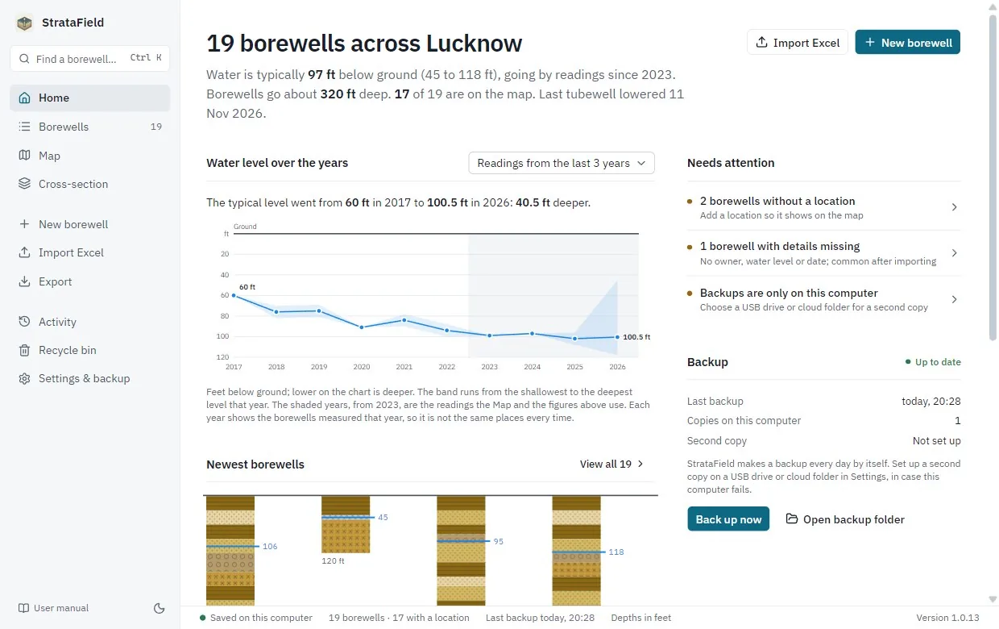

StrataField
Offline-first Windows desktop app used day to day by my family's drilling business to record borewells, soil layers, pipes, water levels and site photos, with an offline city map of water depths and geological cross-sections.

Implementation
Rebuilt the original Electron version on Tauri 2, cutting the installer from 134 MB to 3.5 MB, and replaced sql.js with native SQLite (schema migrations, edit history, recycle bin, daily backups) that imports the old app's data automatically. GitHub Actions runs typecheck, lint, unit tests, a Windows end-to-end test and a clean-machine installer test; tagged releases publish signed builds that installed copies auto-update from.
Tech Stack
Tauri 2, React, TypeScript, Rust, SQLite, Leaflet, Vitest, GitHub Actions